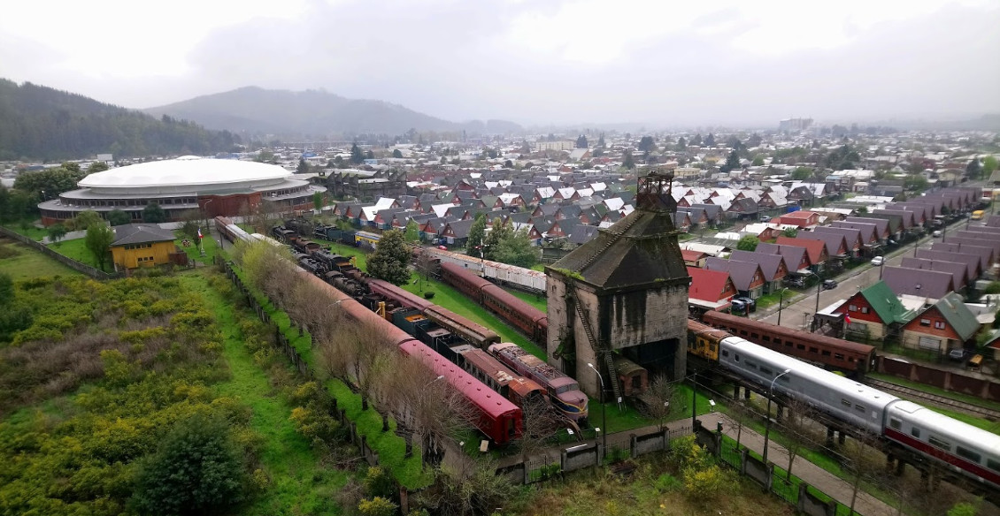

Descubre el museo
Único museo ferroviario de Chile
Un trozo de historia detenido en el tiempo. Su valoración está presente en el corazón de muchos hombres y mujeres, que vivieron la época de esplendor de este complejo ferroviario, o en quienes desean conocer de los orígenes de nuestra joven ciudad.
Descubrir Vista 3DLocomotoras
Presentes en nuestro museo
La historia recuerda que a principios del Siglo XX los ferroviarios utilizaron diversas técnicas para identificar una locomotora, ya sea por los nombres con que se bautizaban, por su disposición de ejes o bien por su nomenclatura, y otras veces por sus fabricantes o nacionalidades.
Conocer las locomotorasActividades
Card subtitle
Some quick example text to build on the card title and make up the bulk of the card's content.
Mirar actividadesDescubre el museo
El Museo Nacional Ferroviario Pablo Neruda, inaugurado el 24 de febrero de 2004, es para la ciudad de Temuco, Capital de la Novena Región de La Araucanía, un trozo de historia detenido en el tiempo. Su valoración está presente en el corazón de muchos hombres y mujeres, que vivieron la época de esplendor de este complejo ferroviario, o en quienes desean conocer de los orígenes de nuestra joven ciudad.
Este complejo ferroviario, que se encuentra emplazado al noreste de Temuco, en el sector denominado estación, fue propiedad de la Empresa Ferrocarriles del Estado de Chile hasta el 2001, año en que fue traspasado a la Municipalidad de Temuco.
A partir de esta fecha esta entidad edilicia ha impulsado el proyecto del Museo Nacional Ferroviario con la intención de conservar y recuperar el patrimonio ferroviario, incentivar y orientar el desarrollo urbano del sector y ofrecer una alternativa de atractivo turístico cultural para la ciudad.
De esta forma, en su primera etapa este proyecto contempló la reparación de la Casa de Máquinas, hoy Museo de Sitio, y del Edificio de Administración, además de la restauración de parte importante de los coches y locomotoras existentes en el complejo.
Es así como hemos centrado nuestros esfuerzos en la tarea de dignificar, preservar y recuperar este complejo ferroviario que fue declarado Monumento Histórico Nacional el año 1989 e inscrito desde 1998 como Sitio del Patrimonio Mundial en la lista tentativa de la UNESCO.
Locomotora N° 463
Modelo: 0-6-OT Tipo: 54 Año:1908
LOCOMOTORA N° 576
Modelo: 2-6-0 Tipo: 57 Año: 1912
LOCOMOTORA N° 718
Modelo: 2-8-2 Tipo: 70 Año: 1919
LOCOMOTORA N° 803
Modelo: 4-8-2 Tipo: 80 Año: 1929
LOCOMOTORA N° 820
Modelo: 4-8-2 Tipo: 80 Año: 1940
LOCOMOTORA N° 841
Modelo: 4-8-2 Tipo: 80 Año: 1952